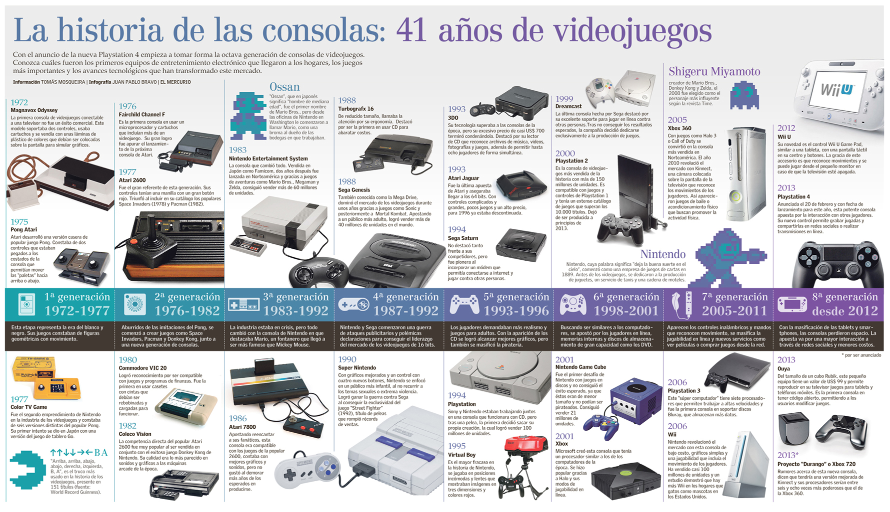

Introducción
Los videojuegos han evolucionado increíblemente desde sus inicios. Desde los primeros experimentos hasta los modernos mundos virtuales.
El impacto de los videojuegos va más allá del entretenimiento: ha influido en la cultura popular, la tecnología y la forma en que nos comunicamos e interactuamos con el mundo digital.
El Primer Videojuego
El primer videojuego fue "Tennis for Two" en 1958, creado por William Higinbotham como una demostración interactiva para un evento científico. Muchos creen que fue Pong, pero este llegó en 1972, desarrollado por Nolan Bushnell y su empresa Atari.
Pong marcó el inicio de la industria de los videojuegos comerciales, introduciendo al público a la idea de jugar contra una computadora o incluso contra otro jugador en la misma sala.

La Edad de Oro de los Arcades
Entre los años 70 y 80, los salones de juegos (arcades) se convirtieron en lugares populares donde jóvenes competían en máquinas como Pac-Man, Donkey Kong y Space Invaders.
Estos juegos eran simples en diseño, pero adictivos y fáciles de entender. La competencia por obtener los mejores puntajes dio lugar a una cultura única de fanáticos y jugadores apasionados.

Consolas Modernas y el Futuro de los Videojuegos
Hoy en día, las consolas como la PlayStation 5, la Xbox Series X/S y la portátil Nintendo Switch ofrecen gráficos realistas, conexión online y experiencias inmersivas.
Además, la realidad virtual (VR), la inteligencia artificial y la nube están transformando cómo se juegan y distribuyen los videojuegos. El futuro promete tecnologías aún más avanzadas, como realidad aumentada y juegos interactivos con control por movimiento o mente.

Mapa de GamePlanet en Aguascalientes
Visita este mapa para encontrar la tienda GamePlanet más cercana en Aguascalientes, donde podrás comprar videojuegos y otros artículos relacionados.
Video: Breve historia de los videojuegos
Avances Importantes
- 1972: Nace Pong por Atari.
- 1978: Sale al mercado Space Invaders, uno de los primeros éxitos globales.
- 1980: Llega Pac-Man, un ícono cultural de los videojuegos.
- 1985: Llega Super Mario Bros, lanzando a Nintendo como líder mundial.
- 1994: Sony lanza la PlayStation, revolucionando los juegos en 3D.
- 2001: Se estrena la Xbox de Microsoft, introduciendo el multijugador online masivo.
- 2006: Nintendo lanza la Wii, enfocándose en controles innovadores y jugadores casuales.
- 2013: Lanzamiento de PS4 y Xbox One, consolidando el streaming y redes sociales en juegos.
- 2020: PlayStation 5 y Xbox Series X marcan el comienzo de la era de los gráficos ultra-realistas y carga ultrarrápida.
Consolas Más Vendidas
| Consola | Ventas (millones) |
|---|---|
| PlayStation 2 | 155 |
| Nintendo DS | 154 |
| Game Boy | 118 |
| PlayStation 4 | 117 |
| Xbox 360 | 84 |
Contáctanos
¿Tienes dudas o deseas compartir tu experiencia con nosotros? ¡Usa el siguiente formulario para contactarnos!